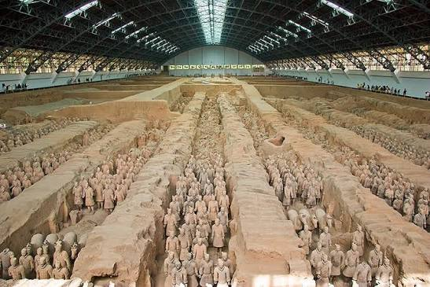
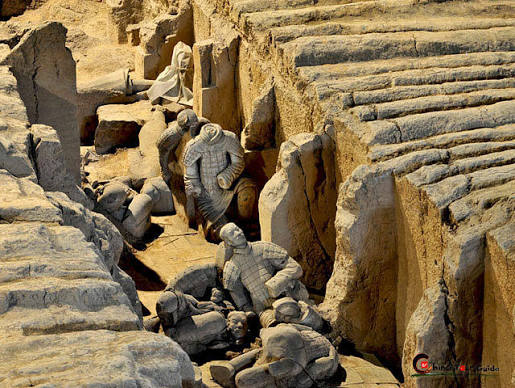
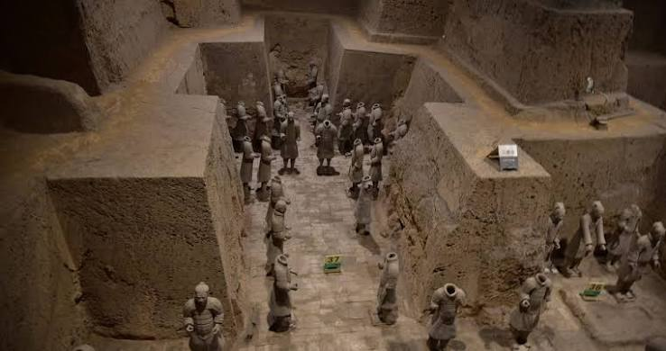

Pit 1
The largest pit (14,260 square meters). It holds the main battle formation of an estimated 6,000 warriors and horses, featuring parallel corridors with infantry and chariots.

Terracotta Warriors
Unearthed from the tomb of Emperor Qin Shi Huang, this silent army rises from the earth as a monument to power, ritual, and time.
These pits housed the stone army, stone horses, and living quarters of the Qin emperor's terracotta warriors.

The largest pit (14,260 square meters). It holds the main battle formation of an estimated 6,000 warriors and horses, featuring parallel corridors with infantry and chariots.

A more complex, highly diverse unit covering 6,000 square meters. It contains a mixed force of cavalry, archers/crossbowmen, infantry, and chariots.

The smallest command post (520 square meters). It represents the upper military headquarters with high-ranking officers and a single chariot.
Archaeological Finds
The three Terracotta Army pits revealed a rich record of Qin dynasty military organization, equipment, and burial ritual.
Thousands of handcrafted clay soldiers in rank-formation, each with unique facial features, hairstyles, and uniforms.
Life-size horses and war chariots were found in position, showing the army's mobility and battlefield support system.
Bronze swords, spears, crossbows, and armor fragments reveal the real equipment used by Qin forces.
Pit 3’s command post, banners, and carefully arranged figures highlight the emperor’s control over the afterlife army.
1